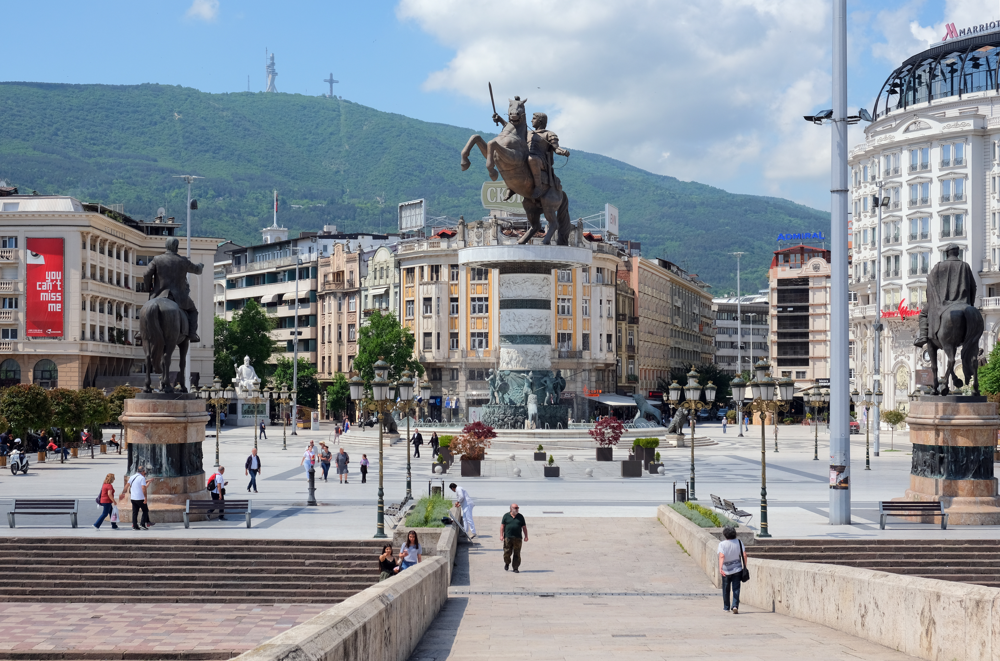

Skopje es la capital y la mayor ciudad del país, con unos 500.000 habitantes, cerca de una cuarta parte de la población nacional. Está en el valle del río Vardar, en el norte del país, y es el principal centro político, económico y cultural. Fue la romana Scupi, la bizantina Skopion y la otomana Üsküp, y esa mezcla de épocas se nota en su paisaje urbano. El terremoto de 1963 destruyó cerca del 80 % de la ciudad y causó más de mil muertos. La reconstrucción contó con ayuda internacional y con un plan del arquitecto japonés Kenzo Tange, de estilo moderno. Tras él llegó el proyecto Skopje 2014, que llenó el centro de estatuas, fachadas neoclásicas y edificios monumentales, y que sigue generando mucha polémica por su coste y su estética. Entre los lugares más conocidos están el puente de Piedra sobre el Vardar, símbolo de la ciudad, la fortaleza de Kale y el Viejo Bazar, uno de los más grandes de los Balcanes, con mezquitas, cafés y talleres. La Madre Teresa de Calcuta nació aquí en 1910, y hay una casa-memorial en su honor. Sobre la ciudad se alza el monte Vodno, coronado por la cruz del Milenio, y a pocos kilómetros está el cañón de Matka. Conviven comunidades macedonia, albanesa, turca y romaní, y la ciudad tiene un carácter mucho más cosmopolita que el resto del país.
